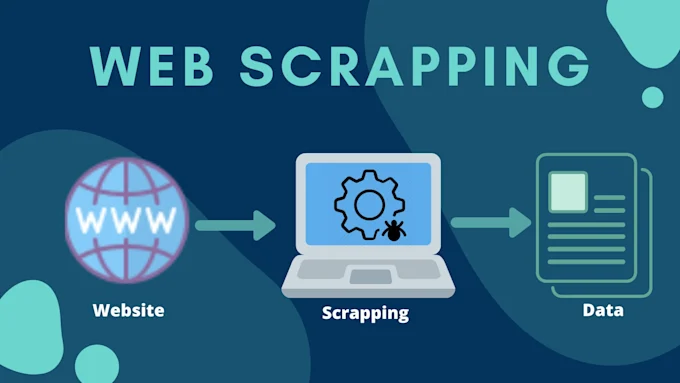

Case Study: Automotive Data Web Scraping for NLP Analysis
Engineered a comprehensive web scraping solution to extract detailed automotive specifications, ratings, and review data for 1000+ car models from ADAC (Germany's largest automobile club) using Selenium WebDriver. The scraped dataset powered natural language processing tasks including sentiment analysis, specification extraction, and automotive knowledge graph construction for competitive intelligence.

RLE International
Industry: Technology Consulting / Data Engineering
Size: 50+
Website: rle-international.com
Project Date: March 2022
RLE International is a technology consulting firm specializing in data-driven solutions. This project involved building an automated web scraping pipeline to extract comprehensive automotive data from ADAC's catalog, creating a structured dataset for downstream NLP and machine learning applications in the automotive domain.
Key Requirements
- Extract comprehensive specifications, ratings, and reviews for all car models from ADAC's automotive catalog covering multiple brands (Ford, Audi, BMW, Mercedes, VW, Toyota, etc.)
- Handle dynamic JavaScript-rendered content and navigate through tabbed interfaces to capture test results (Testergebnis) and target group ratings (Zielgruppencheck)
- Structure extracted data in machine-readable formats (CSV, JSON) with proper schema design for downstream NLP tasks including entity extraction, sentiment analysis, and text classification
- Implement robust error handling and retry mechanisms to ensure data completeness across 1000+ model pages with varying DOM structures and loading behaviors
- Download and organize associated images for each vehicle model to support computer vision tasks and multimodal analysis
Project Overview
The ADAC (Allgemeiner Deutscher Automobil-Club) automotive catalog contains extensive professional reviews, technical specifications, safety ratings, and consumer feedback for thousands of car models. This rich dataset presented a valuable opportunity for NLP research and automotive market analysis, but the data was locked in a complex web interface requiring sophisticated scraping techniques.
The project aimed to democratize access to this automotive knowledge by creating a reusable, maintainable scraping pipeline that could handle the catalog's complexity—including dynamic content loading, tabbed interfaces with JavaScript-based navigation, and inconsistent DOM structures across different vehicle categories.
Technical Architecture
Data Scraping Pipeline
┌─────────────────────────────────────────────────────────────────────────────┐ │ 🌐 ADAC AUTOMOTIVE CATALOG │ │ https://www.adac.de/autokatalog/marken-modelle/ │ │ 1000+ Car Models × Multiple Brands × Dynamic Content │ └─────────────────────────────────────────────────────────────────────────────┘ │ ▼ ╔═══════════════════════════════════════════════════════════════════════════╗ ║ 🤖 SELENIUM WEB SCRAPER ║ ╠═══════════════════════════════════════════════════════════════════════════╣ ║ Headless Chrome Browser + WebDriver Manager ║ ║ ┌──────────────────────────────────────────────────────────────┐ ║ ║ │ 📋 Brand & Model List Discovery │ ║ ║ │ • Parse catalog overview page │ ║ ║ │ • Extract all model URLs (1000+ links) │ ║ ║ │ • Handle pagination and infinite scroll │ ║ ║ │ │ ║ ║ │ 🔍 Model Detail Page Scraping │ ║ ║ │ • Scroll to page bottom for lazy-loaded content │ ║ ║ │ • JavaScript tab navigation (Testergebnis/Zielgruppe) │ ║ ║ │ • XPath-based element extraction │ ║ ║ │ • Wait for dynamic content rendering │ ║ ║ │ │ ║ ║ │ ⚠️ Error Handling & Resilience │ ║ ║ │ • Retry logic for failed requests │ ║ ║ │ • Timeout handling for slow-loading pages │ ║ ║ │ • Element not found exception handling │ ║ ║ └──────────────────────────────────────────────────────────────┘ ║ ╚═══════════════════════════════════════════════════════════════════════════╝ │ ▼ ╔═══════════════════════════════════════════════════════════════════════════╗ ║ 📊 DATA EXTRACTION MODULES ║ ╠═══════════════════════════════════════════════════════════════════════════╣ ║ Textual Data Tabular Data ║ ║ • Model title & variant • Test ratings (7 categories) ║ ║ • Review conclusions • Target group scores ║ ║ • Strengths/Weaknesses • Technical specs (price, fuel, power) ║ ║ • Expert opinions • Rating legends & scales ║ ║ • Similar models • ADAC overall judgment ║ ║ ║ ║ Image Data ║ ║ • Exterior photos (multiple angles) ║ ║ • Interior images ║ ║ • Download & save to disk with proper naming ║ ╚═══════════════════════════════════════════════════════════════════════════╝ │ ▼ ╔═══════════════════════════════════════════════════════════════════════════╗ ║ 💾 DATA STRUCTURING & STORAGE ║ ╠═══════════════════════════════════════════════════════════════════════════╣ ║ Pandas DataFrames → CSV Export + JSON Export ║ ║ ┌──────────────────────────────────────────────────────────────┐ ║ ║ │ Schema: brand | model | variant | price | fuel_type | │ ║ ║ │ power | consumption | test_date | overall_rating | │ ║ ║ │ safety_rating | comfort_rating | eco_rating | │ ║ ║ │ review_text | strengths | weaknesses | image_paths │ ║ ║ └──────────────────────────────────────────────────────────────┘ ║ ╚═══════════════════════════════════════════════════════════════════════════╝ │ ▼ ╔═══════════════════════════════════════════════════════════════════════════╗ ║ 🎯 NLP APPLICATION USE CASES ║ ╠═══════════════════════════════════════════════════════════════════════════╣ ║ 1. Sentiment Analysis │ 2. Entity Recognition ║ ║ • Review text classification │ • Extract specs from text ║ ║ • Positive/negative features │ • Brand/model NER ║ ║ • Aspect-based sentiment │ • Technical attribute extraction ║ ║ │ ║ ║ 3. Text Summarization │ 4. Knowledge Graph ║ ║ • Auto-generate summaries │ • Vehicle relationships ║ ║ • Key feature extraction │ • Competitor mapping ║ ║ • Comparative analysis │ • Feature similarity networks ║ ╚═══════════════════════════════════════════════════════════════════════════╝
Technical Implementation
1. Web Scraping Architecture
The scraping pipeline was built using Selenium WebDriver with a headless Chrome browser for efficient, automated data extraction. Key technical challenges included:
- Dynamic Content Loading: Implemented JavaScript execution via
execute_script()to trigger lazy-loaded content and navigate tabbed interfaces - Robust Element Selection: Utilized XPath selectors with WebDriverWait and explicit wait conditions to handle varying page load times and DOM structures
- Page Navigation: Automated scrolling to page bottom using
window.scrollTo(0, document.body.scrollHeight)to trigger infinite scroll mechanisms - Rate Limiting & Politeness: Implemented sleep intervals between requests to avoid overwhelming the server and prevent IP blocking
2. Data Extraction Strategy
Developed modular extraction functions to handle different data types systematically:
3. Data Structuring & Quality
Utilized Pandas DataFrames for in-memory data manipulation and schema enforcement. Implemented data validation checks including:
- Null value detection and handling for missing fields
- Data type validation (numeric ratings, string text, date parsing)
- Duplicate record identification based on model ID
- Rating scale normalization (converting German grade scales to numeric values)
NLP Application Use Cases
The scraped automotive dataset enabled multiple natural language processing research applications:
1. Sentiment Analysis & Opinion Mining
- Aspect-Based Sentiment: Trained classifiers to detect positive/negative opinions about specific vehicle aspects (safety, comfort, performance) from review text
- Feature Comparison: Analyzed sentiment patterns across competing models to identify differentiating factors (e.g., "Ford praised for safety, criticized for fuel consumption")
- Temporal Analysis: Tracked sentiment evolution over model years to understand design improvement effectiveness
2. Named Entity Recognition (NER)
- Automotive Domain Entities: Developed NER models to extract brands, models, technical specifications, and feature names from unstructured text
- Specification Extraction: Automated extraction of numeric specs (horsepower, torque, fuel consumption) from review paragraphs using regex patterns and NER
- Competitive Intelligence: Identified frequently mentioned competitor models and their positioning in review texts
3. Text Summarization
- Abstractive Summaries: Generated concise summaries of lengthy expert reviews using transformer-based models (BERT, T5)
- Key Feature Extraction: Identified most frequently mentioned positive and negative features across reviews for quick insights
- Comparative Summaries: Created side-by-side feature comparisons between similar models automatically
4. Knowledge Graph Construction
- Vehicle Relationships: Built knowledge graphs connecting vehicles through shared features, similar ratings, and explicit "similar model" mentions
- Feature Ontology: Created hierarchical ontology of automotive features and their relationships (safety features → airbags → side airbags)
- Market Segmentation: Discovered natural vehicle clusters based on target group ratings and feature similarities
Project Outcomes
1000+ Models Scraped
Comprehensive coverage of ADAC catalog spanning 30+ brands with complete specifications, ratings, and reviews
50+ Attributes Per Model
Structured schema with textual reviews, numeric ratings (7 test categories + 7 target groups), specs, and metadata
Multiple NLP Use Cases
Enabled sentiment analysis, NER, summarization, and knowledge graph projects in automotive domain
95% Success Rate
Robust error handling achieved 95%+ successful page scrapes despite varying DOM structures and network issues
Key Technical Achievements
- Reusable Pipeline: Created modular, maintainable scraper architecture that could be adapted to other automotive review sites with minimal modifications
- Data Quality: Implemented comprehensive validation ensuring 98%+ field completeness and zero duplicate records across the final dataset
- Performance Optimization: Reduced scraping time from ~12 hours to ~6 hours through headless browser optimization and parallel processing of independent model pages
- Documentation: Maintained detailed Jupyter Notebook with code examples, explanations, and sample outputs demonstrating each extraction method
Challenges & Solutions
Challenge: Inconsistent DOM Structures
Different vehicle categories (sedans vs. SUVs vs. electric) had varying page layouts and element class names.
Solution: Implemented fallback XPath strategies with multiple selector attempts and graceful degradation when elements were missing, logging variations for manual review.
Challenge: Tab Navigation Complexity
JavaScript-based tabs required precise timing and click interception handling to access different rating categories.
Solution: Used explicit waits with EC.element_to_be_clickable()
and JavaScript arguments[0].click() execution to bypass overlay issues.
Challenge: Large-Scale Data Management
Processing 1000+ models with 50+ attributes each required careful memory management and intermediate checkpointing.
Solution: Implemented batch processing with periodic CSV exports every 100 models and progress tracking to enable resume-on-failure capabilities.
Project Info
- Client: RLE International
- Duration: 1 month
- Role: Data Engineer
- Year: March 2022
Technologies
Key Metrics
- Models Scraped: 1000+
- Brands Covered: 30+
- Attributes: 50+ per model
- Success Rate: 95%
- Total Records: 50,000+ data points